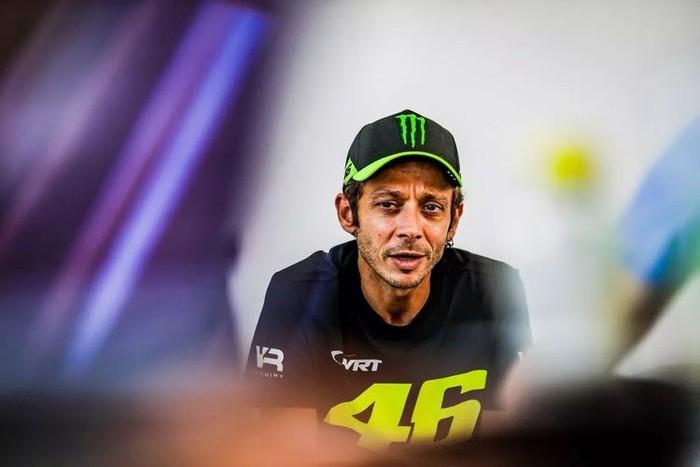
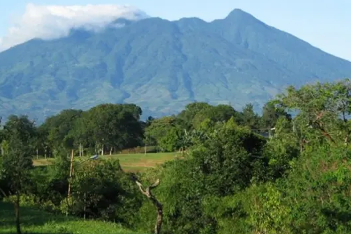
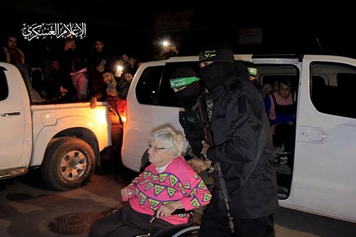
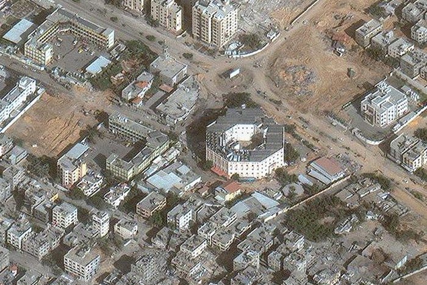

- "Kepindahan Marc cukup menarik untuk dilihat, dan kita lihat juga bagaimana
Ducati menangani dia. Marc akan sangat berbahaya, untuk itu rider
kami harus fit," tutur Rossi dilansir Motosan.
- Dalam hitungan hari, Marc Marquez bakal menjajal langsung performa motor Ducati.
Ya, Marquez sudah memutuskan tak melanjutkan kontraknya
musim depan bersama Repsol Honda. Pebalap berjuluk The Baby Aliens
itu bakal menunggangi Ducati Desmosedici GP 23 bersama dengan Gresini Racing mulai 2024.

- Sup terenak di dunia menurut Taste Atlas ini didominasi oleh negara Asia, seperti Filipina, Jepang, Vietnam, dan Thailand. Selengkapnya, simak 10 sup terenak menurut Taste Atlas berikut ini...

- Seorang sandera yang diculik oleh orang-orang bersenjata Hamas selama serangan 7 Oktober di Israel, diserahkan oleh militan Hamas kepada anggota Komite Palang Merah Internasional, 28 November 2023

- Kebakaran terjadi di Kampung Kurnia, Lingkungan 10, Kelurahan Belawan Bahari, Kecamatan Medan Belawan...